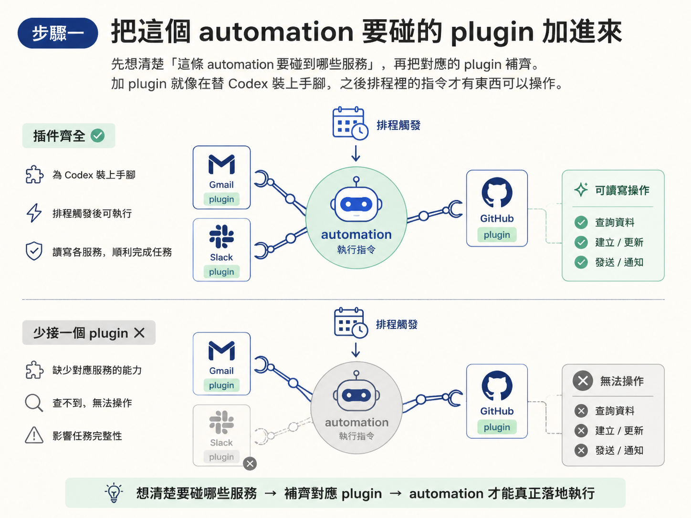
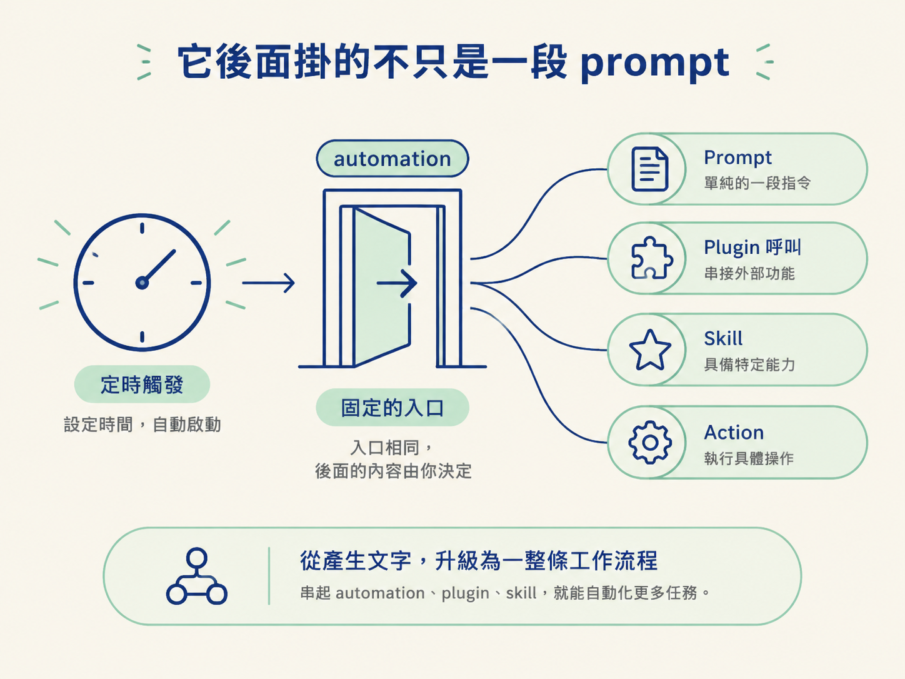

這課做完，你的排程頁上會多一條 automation：時間一到，它自己透過 plugin 去 Gmail、Slack 或 GitHub 撈資料，整理成你要的結果。例如每天早上吐一份待審 PR 清單，或一份 daily brief。
前面幾課建的 automation，本質上都是一段 prompt 照排程跑。它會準時出現，但產出多半是文字。問題是：你的工作不會自己跑到 prompt 裡面。
真正會改變你一天的資訊，散在 Gmail 的信、Slack 的訊息、GitHub 的 PR 裡面。你得自己開分頁、一頁一頁翻，才知道今天該處理什麼。這就是這一課要解掉的問題：讓 automation 直接去碰那些工具，把「你去找資訊」反過來變成「資訊自己送上門」。
動手前請先確認兩件事：第一，你想盯的對象已經存在，也就是你平常真的在用 Gmail、Slack、GitHub 這些服務；第二，對應的 plugin 已經裝好。這一課直接假設你知道 plugin 能讓 Codex 讀寫外部工具，如果還不熟，先回頭看 plugin 那一課。
做法很直白：把工具加進來就對了。要盯待審 PR，就接 GitHub；要彙整每天的信件與對話，就接 Gmail 和 Slack。
先想清楚「這條 automation 要碰到哪些服務」，再把對應的 plugin 補齊。加 plugin 是在替 Codex 裝上手腳，之後排程裡的指令才有東西可以操作。少加一個，那個服務就查不到。

plugin 到位後，建立方式和一般 automation 完全一樣。差別只有一個：prompt 裡描述的動作，會實際用到剛剛加的那些工具。
以待審 PR 為例，可以這樣寫：
每天早上 9:00，檢查 GitHub 上等我 review 的 PR，
整理成一份清單，附上每個 PR 的標題與連結。這段 prompt 有三個關鍵成分，缺一個，做出來的就不是你要的：
寫完送出去就好。這也是為什麼多數人用 automation 的方式就是「加 plugin，再叫它照排程檢查某件事」。真正有價值的自動化，幾乎都得碰到你每天在用的外部工具。
送出後不要就走開。回到排程頁，檢查兩件事：
若發現哪個 plugin 沒接上、或動作寫得太含糊，直接編輯那條 automation 就好。這是可逆的動作，不需要刪掉重來。
要自動化什麼完全取決於你，但有幾個樣式反覆出現：
這三個樣式的共同點是：它們都盯著一個「會一直變、又容易被忽略」的地方。你專心做事的時候，automation 替你不斷掃描；真的有需要你處理的事，它才把東西送到你面前。
課程裡有人問了一個很實際的問題：automation 能不能去執行某些 skill、plugin 和 action？答案是可以，而且這正是大多數人使用它的方式。
把 automation 想成一個「定時觸發的入口」。入口後面掛什麼，由你決定：可以是單純一段 prompt，也可以是一組 plugin 呼叫、一個 skill，或某個具體的 action。一旦把這個入口和前面學過的 plugin、skill 串起來，能自動化的範圍就從「產生一段文字」擴大成「替你操作一整條工作流程」。

驗證很簡單：排程頁上多了一條 automation，時間一到，它就透過你加好的 plugin 去檢查指定的外部工具，並把交代的結果產出或執行出來。你不必記得去開 Gmail、翻 Slack、看 GitHub，該注意的事會自己定期出現。
至於 plugin 在背後怎麼跟那些服務溝通，那是另一課的範圍。這裡你只需要確認三件事都到位：plugin 加好了、prompt 描述清楚了、排程設對了，這條自動化就會成立。
要做出真正有用的 automation，先加上對應的 plugin（Gmail、Slack、GitHub 這些你每天在用的工具），再用一段 prompt 講清楚「查什麼、多久查一次、產出長什麼樣」。常見樣式是 daily brief、待審 PR 清單、定時檢查 Slack 與 email。而 automation 不只是一段 prompt，它後面可以掛 plugin、skill 或具體 action，本質上是一個定時觸發的工作流程入口。
到這裡，你已經會建、會選設定、也會串 plugin。但 automation 不是萬能的。下一課講它的邊界：哪些事情它碰不得，尤其是公開網站為什麼不能靠它自動重新部署，這是動手前一定要先知道的事。